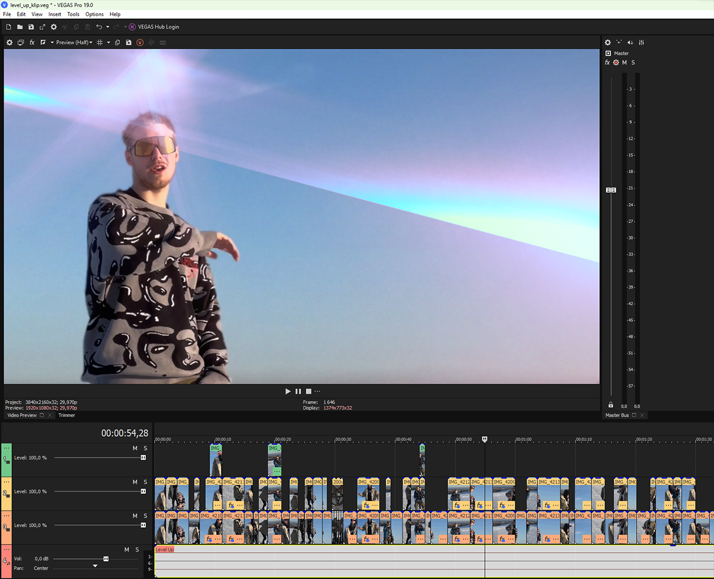

Music, gaming and everything
in between, all in one place.
Here.
Using Vegas Pro (I really should make some time to learn Premier...), montages or music videos are no problem.
There is a channel with videos from my CS2 days. I had a blast making those.
Music needs videos and visuals. You can find my work on XST channel as well.

A little sample of my editing from both
gaming and
music.